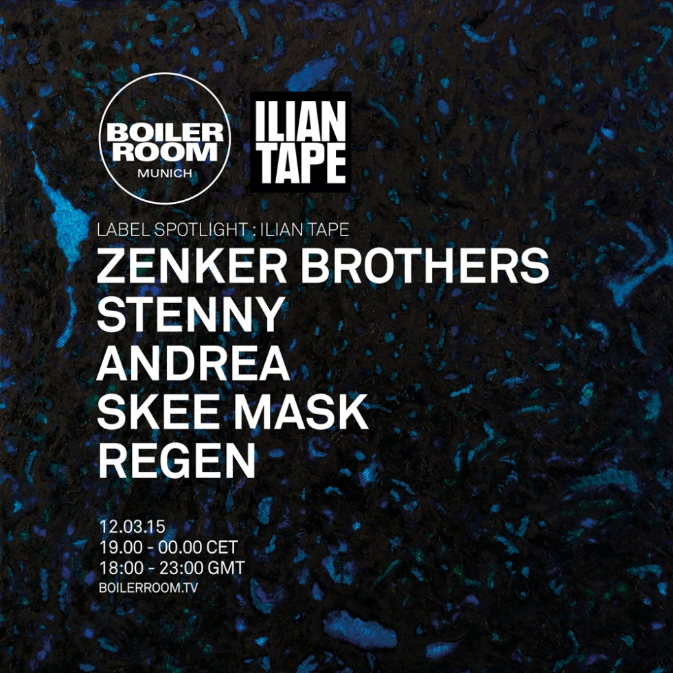
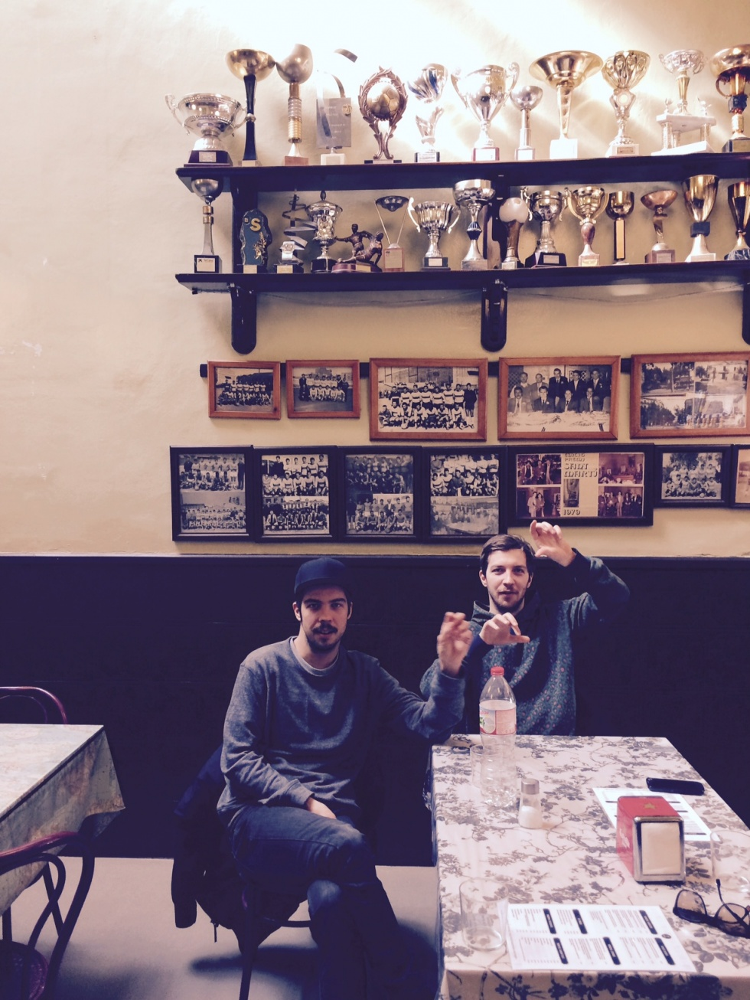
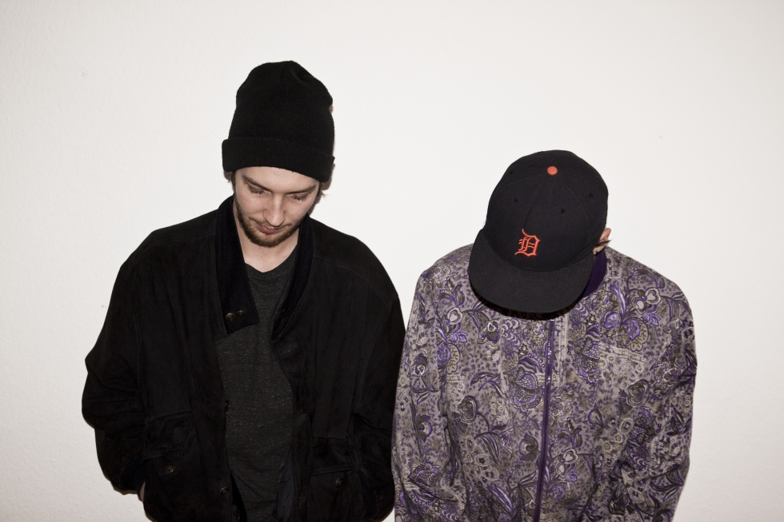

Ilian Tape: Global Record Label, Firm Munich Roots
{kind=link}

The Zenker Brothers have just dropped their debut album Immersion, and it’s a testament to what the real-life siblings have been building together with their Ilian Tape label since 2007. The uniqueness of their approach to techno, as well as that of the artists they host on their roster; to the sound they’ve developed together, as well as with their own solo productions.
“At the beginning of last year we moved our two bedroom studios together into the one space, and that was really kind of the beginning of the process,” Marco Zenker told Boiler Room.
“We spent a lot of time together there, we put all of our machines there, and naturally we made music there together. And we started playing out together a lot more than when we had our separate studios. Dario [Zenker] had the idea for many years to do a solo album, but I think this was when it really became serious, when we thought maybe now is a good time to begin work.”
Boiler Room caught up with Marco and Dario Zenker in Berlin on a Sunday morning, a mere few hours before they were scheduled for a 5-hour afternoon set at Berghain. While it’s understandably a daunting prospect for any performer, they both gave off a relaxed air, clearly pleased with the positive reception Immersion has received so far.
“It’s great that people are open to it, and have listened to it in a way that we intended,” says Marco. “We made it for listening, not just for the club. We tried to break out a little bit, and most people really do get that. The best feedback we’ve got is that you can listen from beginning to the end, and very quickly you have pictures in your head. It’s a very visual experience.”
Indeed, with Immersion they’ve pulled off a feat that’s often proved elusive for club producers; a diverse musical statement that works as a coherent whole. Thoughtful, while still accessible for the techno massive, it’s an embodiment of what they’ve strived to achieve with the label. A balanced mix of dubby atmospherics, noisy experimentalism, broken beats as well as straight-up steely techno. Immersion represents the flag in the sand the brothers were hoping for.
“Those different sonic elements, we enjoy that a lot. Since the beginning that was always a part of what we tried do with the label”
“Those different sonic elements, we enjoy that a lot,” says Marco. “Since the beginning that was always a part of what we tried do with the label, though in the past years it was probably even more present. But it was always important for us to try and break out, to explore.”
These are sentiments that are mirrored by Dario; and it’s clear how much the pair are at ease with each other. They’re both on the same wavelength, friends as much as they are family.
“Even if we sit down and say, we’re going to make a heavy dancefloor track now, it never works out that way. I mean, even with our EPs, it’s never just four DJ tools on there. Whether it’s breaky sounds, or something more atmospheric. We’re always looking for something new, always.”
The full range of sounds associated with the Zenker Brothers, as well as their label, are showcased to full effect on Immersion. Opening on a note of swirly ambience with “Mintro”, it’s followed by the brooding atmosphere of “Aisel”. We’re kept waiting until “TSV WB” before the breakbeats are unleashed in full force; itself a prelude for some straightforward techno oomph with “High Club” later on the album. Elsewhere, they shoot back and forth between experimental adventures, plenty of inventive percussion, as well as some grander, more emotive moments.
{kind=link}

The Ilian Tape ideology
It’s a sonic approach that’s been described as the ‘Munich sound’. However, this sells short that Ilian Tape is home to artists from all over the world who have similar musical aesthetics. Munich locals like Skee Mask joined by the likes of Andrea and Stenny from Italy; Regae from Serbia, and Jonas Kopp from Argentina; they’re all part of a growing stable who share a common desire to experiment and explore new approaches to atmosphere and percussion, on the dancefloor and beyond.
The booking agency is one of Ilian Tape’s newest additions, expressed by the pair as a genuine desire to support artistic development, and also somewhat inspired by Dario’s earlier experiences as a producer who released music on a whole swathe of different labels.
“They were good experiences,” says Dario, “but the labels never really gave me the feeling that okay, we can work on something. It’s more like, okay we’ll put out a record and that’s it.”
“And we’re artists ourselves,” adds Marco. “And that’s why we try to make an artist really feel comfortable on the label. Dario had these experiences before he got round to focusing on his own project, and I was able to learn from that. I don’t think he intended to release on so many different labels, but he just didn’t feel comfortable in any one place. With the label, we want to give the guys a platform and to help them out, to move forward and be comfortable.”
“For me it’s much more interesting to put out more records from an artist, than just the one,” adds Dario. “When we release the first record, I’m very open, and I hope that he will send more, and that we will be the first and the only ones to listen to that stuff… and that we can really develop something from there. And that’s what happened with producers like Stenny and Andrea, they know that we try our best for them, and we really put a lot of work into a release.”
{kind=link}

Home is where your heart is
Whether or not the ‘Munich sound’ is an apt label for the records we’re hearing from Ilian Tape, the city plays an important part of the narrative for the Zenker Brothers; for better or worse. There’s been much discussion of their family’s seminal involvement in the Munich scene; in particular, their aunt Dorle Zenker and the role she played with the iconic Ultraschall club. In addition, while Dario and Marco have different biological fathers, both of them had their own roots in the Munich scene. However, while the brothers strongly identify with their hometown, they say the notion that they emerged from any kind of ‘Munich techno dynasty’ is a misrepresentation.
“It was always a nice interesting side note, but it had really nothing to do with why we started making music,” says Marco. “Our mother moved with us both to the Bavarian countryside when we were very young, with our dads both staying in Munich. We both went to high school in the country, and our mum had completely nothing to do with techno at all.”
“It’s not like we grew up amongst it, or were able to take advantage of any kind of family connections,” says Dario. “It’s a funny thing that DJs like Anthony ‘Shake’ Shakir stayed at our dad’s house on the weekends, and sometimes we met them. But actually I didn’t have a clue who he was at the time. I was only 10 years old and he was just a friend of my dad.”
“It’s tough for artists, especially at the beginning, because in Munich you can’t really afford to live from making music”
Nevertheless, while Ilian Tape is a record label with a global posse of artists, it’s simultaneously proud of its Munich roots. Resisting the obvious choice of uprooting and relocating to Berlin, the techno capital of Germany as well as the world; the pair say it made sense to remain in Munich.
“It’s tough for artists, especially at the beginning, because in Munich you can’t really afford to live from making music,” Marco says of his hometown, which he admits grants less reverence to the culture of electronic music that what Berlin enjoys. “But we have our roots in Munich, it feels like home and it’s important for us to stay if we can. Especially with travelling so much, it’s such a great place to come to and we really feel comfortable here.”
There’s also the desire to stay and remain part of their city’s scene. After all, if all of the artists exodus towards the capital, there’s won’t be much of a culture left.
“And I think that’s what happened in a way, because a lot of the creative people, most of them left their cities. I think it’s unbelievable how many people from the scene actually live in Berlin. And it’s easy to see why people move here. It’s affordable, it’s so multicultural, and it’s super liberal, you can really do what you want. But there’s a so much good music being made in Munich still. We want to be a part of that culture, to stay there and to build something.”
Next Thursday, the Zenker Brothers will be backed by Stenny, Andrea, Skee Mask and Regen as we adjust the spotlight onto their Ilian Tape label. More info HERE
Angus Paterson
Angus Paterson is a freelance writer, content producer and electronic music obsessive, originally from Australia and now based in Berlin.